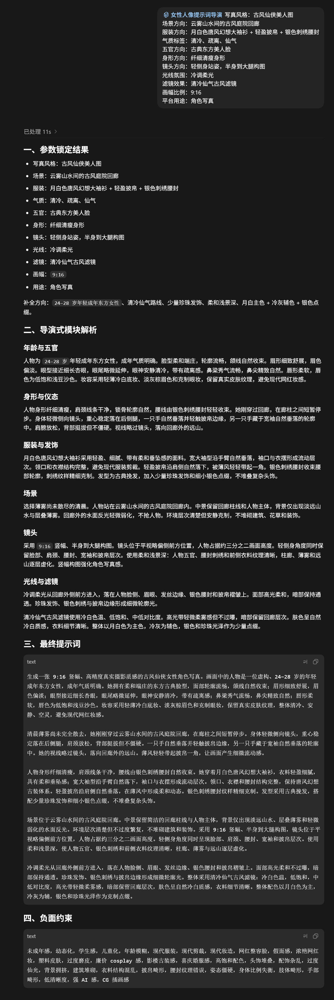

女性人像导演 Skill：把提示词变成可控的摄影指令
它不是“女性头像词库”，而是一套结构化提示词导演系统：先锁定用户明确要求，再按风格文件、模块化参数和安全边界把短输入扩成可直接生成或可编辑的摄影级提示词。
01 / 核心判断
这个 Skill 的价值不在“写更多形容词”，而在锁定参数、单风格路由、模块化扩写：它把“用户一句话”变成“可复制、可控、可审查”的摄影导演指令。
先试顺序
- 先给约束：风格、场景、服装、情绪、镜头、比例。
- 再选路线：clean lifestyle / fashion / fantasy / oriental / e-commerce 等单一路线。
- 最后生成：让 Skill 输出 locked parameters + prompt + negative constraints。
怎么读这张卡
不要把它理解成“人像提示词大全”，而要理解成一个导演器：输入越短，系统越负责补足构图、光线、姿态和平台目的，同时不越过用户锁定的核心设定。
锁参数，再扩写；先保真，再做视觉优化。
单风格文件路由，避免风格词互相打架。
输出不是词表，而是可直接复制到图像生成器里的完整 prompt。
02 / 它到底做什么

输出结构
最终返回固定四段：锁定参数、模块分析、完整 prompt、negative constraints。这样用户能直接复制，不需要再人工拼接。
锁参数
保留用户明确要求，只对缺省项做视觉补全，不改方向。
单风格路由
每次只走一个 on-demand style file，避免风格冲突和风格漂移。
模块化扩写
将脸型、身形、衣着、场景、镜头、光线、滤镜拆开处理。
安全边界
默认成人女性、拒绝越界内容，并强调可控和稳定生成。
03 / 支持风格怎么分组
生活方式
clean lifestyle、restrained curve-focused、french relaxed、travel vacation、sporty active。
商业与电商
e-commerce clothing model、studio-retouched portraits，强调服装展示优先。
东方与古风
gufeng fantasy、new Chinese oriental、cold xianxia、bright luxury gufeng。
城市与时尚
urban fashion、retro Hong Kong、studio portraits，适合更强的镜头感和平台传播。
04 / 使用时最该记住的 4 点
- 适合谁：需要把短参数变成可复用人像提示词的人。
- 不适合谁：只想随手堆词、不在乎镜头、光线与平台目标的人。
- 最强收益：减少风格冲突和“看起来像但不稳定”的输出。
- 边界：它是导演系统，不是无限创意库。
05 / 来源与入口
它是一个可控的人像导演器，不是简单 prompt 集合。
把短输入扩成完整摄影指令，同时保留用户核心要求。
强调 realism、coherence、restrained expression 和 stable generation。